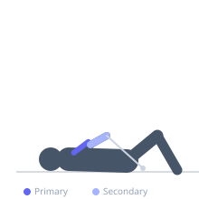
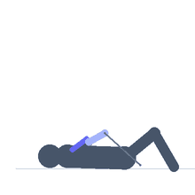

Exercise guide / Single-Arm Cable Biceps Curl — Supine on Bench
Single-Arm Cable Biceps Curl — Supine on Bench
A biceps curl performed lying supine (face up) on a flat bench with the head near a low cable pulley, gripping a D-handle. This lying position changes the resistance angle — the cable pulls from behind and below the shoulder at the start of the rep, providing a unique lengthened-position loading on the biceps that is not achievable in a standing cable curl. The supine position also eliminates body swing, enforcing strict biceps isolation. Used as an isolation finisher or as a variation to target the stretched portion of the strength curve.
Primary muscles
biceps brachii long head
biceps brachii short head
brachialis
Secondary muscles
brachioradialis
Equipment
Cable Machine (Low Pulley)
Flat Bench


Starting position
- Position a flat bench with the head end nearest to a low cable pulley. Lie supine with the head near the pulley, holding a D-handle in one hand with the arm extended back toward the pulley.
Setup
- The arm should be extended with the cable pulling toward the pulley (behind and below the head). The upper arm rests along the side of the torso.
Steps
- Step 1: Lie supine with the working arm extended toward the pulley, palm facing upward.
- Step 2: Curl the weight by bending the elbow, bringing the handle toward the shoulder.
- Step 3: Hold the fully curled position for 1-2 seconds, squeezing the bicep.
- Step 4: Slowly lower the arm back to full extension. Repeat, then switch arms.
Coaching cues
- Feel the stretch at the very bottom of the rep — the supine position with cable pulling behind creates a unique loaded stretch
- Keep the upper arm fixed on the torso — only the forearm moves
- Slow the return — that is where this variation is most different from a standing curl
Breathing
- Exhale during the curl. Inhale during the return to extension.
Range of motion
- Full elbow extension at the bottom (arm extended toward pulley) to full elbow flexion at the top.
Tempo
- 2s curl, 2s hold, 3s slow eccentric to full extension.
Common mistakes
- Lifting the upper arm from the torso during the curl — the upper arm should stay fixed
- Swinging the torso to assist the curl — this cannot occur in the supine position but partial torso rotation should be avoided
- Rushing the return — the eccentric with the cable pulling behind you is the unique stimulus
Safety
- Ensure the bench is stable and will not slide toward the pulley under load
- If the shoulder is uncomfortable in the extended arm position, place the bench slightly further from the pulley
Training
- hypertrophy: 10–15 reps
- hypertrophy: 2–4 sets
- Rest: {'hypertrophy': 60}